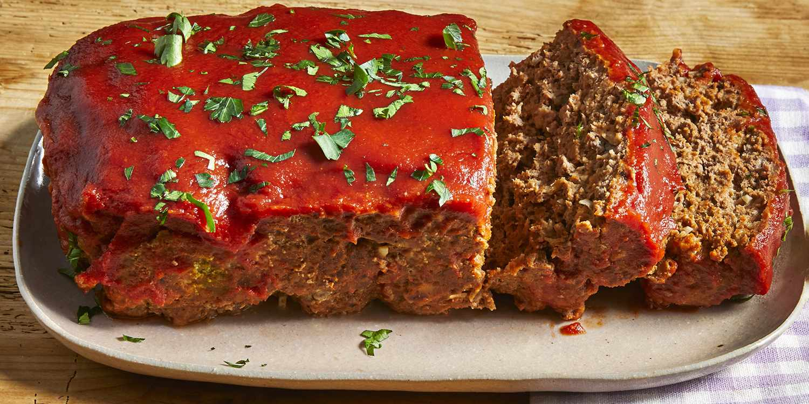

Meatloaf

Meatloaf
Meatloaf is a savory dish made from ground meat, beef, mixed with a variety of ingredients such as breadcrumbs, eggs, onions, garlic, and seasonings.
The mixture is shaped into a loaf and baked until cooked through. The meatloaf's texture is firm yet tender, with a slightly dense but moist consistency.
Ingredients
- For the loaf:
- Ground beef
- Eggs
- Onion
- Milk
- Bread crumbs
- Salt
- Pepper
- For the sauce:
- Ketchup
- Brown sugar
- Mustard
Steps
- Mix the loaf ingredients, then transfer to a loaf pan.
- Mix the sauce ingredients, then pour over the loaf.
- Bake in the preheated oven until the meatloaf is no longer pink in the center.